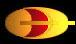
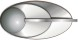
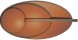
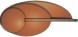
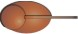
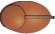
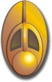

Bajoriani |
Specie umanoide molto antica e con un forte senso di spiritualità che è
servita a tenerli e unito il popolo bajoriano in situazioni di estrema crisi. Dal
2328 al
2369 la civiltà bajoriana è stata
decimata dai Cardassiani, che hanno
occupato e depredato il pianeta uccidendo circa cinque milioni di persone; i
Cardassiani sono stati respinti grazie ad un
intervento federale. Secondo la religione bajoriana, il
wormhole che si
trova nei pressi della cintura di asteroidi di Denorios vicino a
Bajor è il Tempio Celeste, l'abitazione dei
Profeti, le divinità dei bajoriani; il capo spirituale dei Bajoriani è il Kai.
Secondo l'usanza bajoriana, viene prima il cognome e poi il nome proprio, il
quale non è utilizzato in pubblico, ma solamente tra persone molto amiche tra
loro o legate da un profondo affetto. La maggior parte dei Bajoriani indossa un
orecchino ornamentale di foggia unica sul proprio orecchio destro. Per misurare
la superficie dei terreni i Bajoriani
usano i tessipati, che si dividono in kerripati (Children
of Time). Ogni anno i
Bajoriani celebrano la Festa della Gratitudine, durante la quale il saluto
tradizionale è «Peldor joi!»
La festa che celebra l'arrivo dell'Emissario si chiama Ha'mara; caratteristica di
questa festa è il digiuno, con il quale i Bajoriani ringraziano i Profeti per
aver inviato l'Emissario (Starship Down).
Il canto funebre bajoriano è «Ahn-kay ya, ay-ya vasu. Coh-ma-ra, di-nay-ya.» (Battle
Lines).
Navarca è un titolo onorifico creato appositamente per assegnarlo all'eroe
bajoriano Li Nalas (The Homecoming).
Il primo ministro dura in carica sei anni (Shakaar).
Durante l'occupazione cardassiana, i membri della
resistenza bajoriana avevano sottopelle degli impianti di isotopi di tritonio;
in caso di cattura bastava attivare l'impianto per lasciare una traccia di
isotopi, essere rintracciati e salvati (Indiscretion).
Matrimonio
I matrimoni tradizionali bajoriani vengono celebrati secondo gli antichi testi,
tra cui la Settima Profezia di Horran (Ferengi
Love Songs). La formula rituale per la celebrazione di un matrimonio
bajoriano è «Boray pree hadokee. Tolata impara boresh. Preeya (sposo), Preeya
(sposa), abrem varo atel» dopodiché gli sposi si baciano (Call
to Arms).
Milizia bajoriana
Le divise bajoriane sono di tre colori differenti: rosso per il comando,
grigio per la sezione ingegneria e marrone per tutti gli altri incarichi.
Queste sono alcune uniformi della milizia.
| Uniforme di servizio di Kira utilizzata nelle prime stagioni di Deep Space Nine |
|
| Uniforme alternativa di servizio di Kira | |
| Uniforme maschile della sezione comando | |
| Uniforme di Odo (sicurezza) |
 |
| Uniforme di servizio sezione sicurezza | |
| Uniforme di servizio sezione ingegneria |
 |
Queste sono le insegne di grado della milizia bajoriana che si portano sul
colletto sinistro dell'uniforme.
| Generale |  |
| Colonnello |  |
| Maggiore |  |
| Capitano |  |
| Tenente |  |
| Tenente J.G. |  |
| Guardiamarina |
Questo è il commbadge indossato sulla parte destra dell'uniforme.
|  |
| Bajoriano | Italiano | Episodio |
| addo | notte | |
| ahkayah | amore | |
| akares | essi | |
| alvas | qualità di noce commestibile | Resurrection |
| a'mor | esilio | |
| àmoran | esiliato | The Assignment |
| -an | participio passato (suffisso) | |
| antana | sentiero | |
| aya | speranza | |
| balik(am) | andate via/fuori di qui | |
| bantaca | obelisco, colonna | Rapture |
| bara | piazza | |
| bateret | incenso | Rapture |
| belaklavion | strumento musicale a fiato simile a un clarinetto | Preemptive Strike |
| bentel | i Profeti | Fascination |
| boryhas | fantasma, spirito | |
| botan | cereale | |
| bren | accettare | Fascination |
| buru | ha | |
| com | mai | |
| dal'Rok | creatura fatta di energia | |
| decipate | misura terrestre di area | |
| der | lampada | |
| duranya | lampada per i morti (pr. duranìa) | |
| d'jarra | ceto | Accession |
| d'jarras | sistema di caste | Accession |
| eh | essi | Accession |
| ekayha | guardare | |
| emma | morte | |
| frake | celeste | |
| goryam | tempio | |
| ha'dara | casa della luce | Flesh and Blood - Part II |
| ha'mara | festa che commemora l'arrivo dell'Emissario | |
| hasperat | piatto tradizionale | Preemptive Strike |
| hoot | dolore | |
| ih'valla | casta D'Jarra degli artisti | Accession |
| impadre | lieto | |
| ih'tanu | cerimonia per il compimento del quattordicesimo anno di età | |
| isik | valuta usata nel settore bajoriano | Rivals |
| ja | mio | |
| jer | occhio | |
| Jeraddo | quinta luna di Bajor | Progress |
| joi | grazie | Fascination |
| jumja | albero | In the Hands of the Prophets |
| kai | leader spirituale | Emissary |
| kana | giungere | Shakaar |
| katterpod | qualità di fagiolo | Progress |
| kava | tipo di radice | Starship Down |
| kejal | libertà | Flesh and Blood |
| kel | unisono | Accession |
| kellipate | unità di misura di distanza, non pronunciato nel doppiaggio italiano dell'episodio | Progress |
| kerripate | unità di misura di distanza | Children of Time |
| klavion | strumento musicale a fiato simile a un clarinetto | Preemptive Strike |
| kosst | essere | The Assignment |
| kova | udire | |
| kovanha | ascoltare | |
| lita | valuta standard | Necessary Evil |
| lorka | pergamena | |
| makara | erba medicinale | Looking for par'Mach in All the Wrong Places |
| maynar | principale | |
| moba | frutto | Rejoined |
| moralla | fine | |
| mareka | cereale | |
| nara | tenere | Shakaar |
| navarch | intercessore, "colui che riferisce direttamente ai Profeti", Navarca | The Homecoming |
| navot | montagna, nome di una fazione bajoriana | The Storyteller |
| naz'g | sconosciuto | |
| non | per | |
| nya | morto | |
| olan | attraverso | |
| pagh | anima, forza vitale | Emissary |
| pagh'tem'far | visione | Rapture |
| paluckoo | aracnide | The Siege |
| peldor | felice | Fascination |
| peldor Joi | saluto cerimoniale usato durante il Festival della Gratitudine | Fascination |
| prop | fuoco | |
| propay | fiamma | |
| prylar | grado della gerarchia religiosa, sotto Vedek | Shadowplay |
| qezin'rt | rinnovamento | |
| raka | prendere | |
| rana | è | |
| ranjen | monaco | The Reckoning |
| ratamba stew | pietanza | For the Cause |
| rejka | condimento | |
| salom grass | cereale | |
| sean | palude | Let He Who is Without Sin... |
| serenas | musica | The Forsaken |
| shakala | benedire | |
| shakalaka | profezia | |
| shalla | vita | |
| shalli | dimenticare | |
| sirah | «colui che racconta» | The Storyteller |
| sten | anno | Fascination |
| suuk | memoria | |
| takeo | erba medicinale | Looking for par'Mach in All the Wrong Places |
| te'na | lavoro | |
| te'nari | casta D'Jarra | Accession |
| tesra | dono | Fascination |
| tessipate | unità di misura terrestre di area | Progress |
| tetrarch | titolo del leader dei Paqu | The Storyteller |
| tevan | potere | |
| tie | queste | |
| ton | strada/via | |
| tuwally | dessert | |
| unsyor | persona | |
| uranak | preghiera | Shakaar |
| va | volontà | |
| vasuu | prendersi cura | |
| vedek | sacerdote | In the Hands of the Prophets |
| veklava | cibo | Rejoined |
| veyt | guida | |
| voka | cammino |